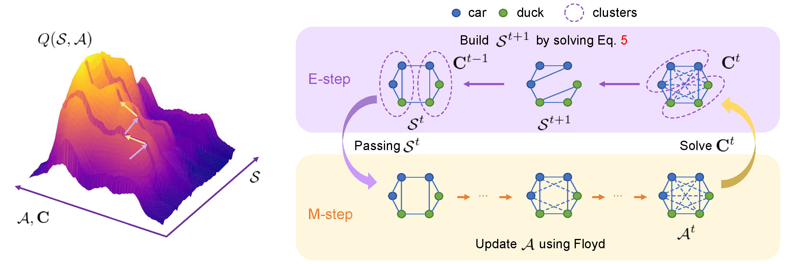

Stitching and Cutting on Supergraph: an EM Approach for Joint Graph Matching and Clustering
Abstract
Given a batch of graph data that are ubiquitous, one interesting and practical task is discovering the groups and matching the graphs in the sense of finding their node correspondence within each group. In fact, matching and clustering are two interleaved tasks and a joint approach is rarely studied. Existing literature often assume the graphs for matching are from the same category, which tend to be unrealistic. This work aims to push forward the graph matching models to the above more practical setting. Specifically, an EM-like joint matching and clustering procedure is devised, such that the meaningful matchings are discriminatively performed within each gradually formed cluster. Moreover, we extend our method to the online setting where new graph arrives incrementally. Extensive experimental results on public benchmarks show that our method notably surpasses the state-of-the-art peer methods in both accuracy and efficiency (per iteration).
